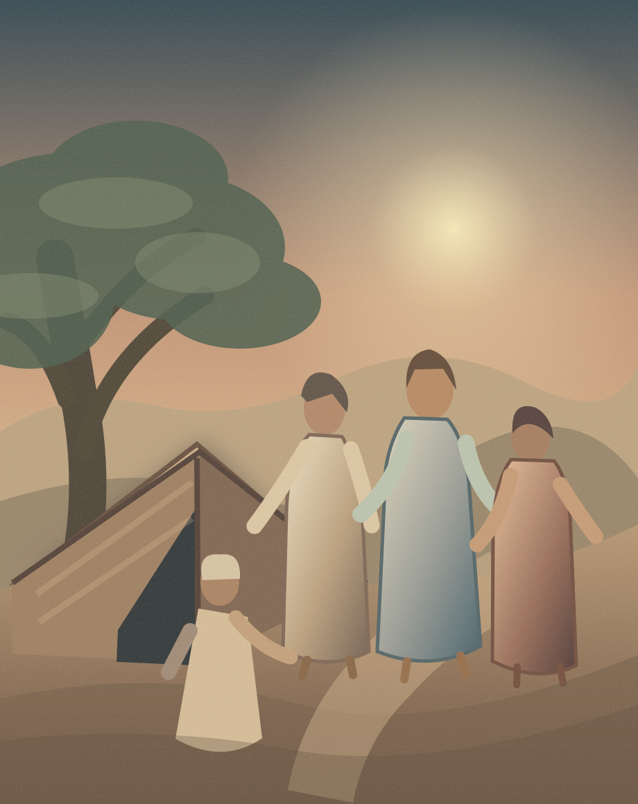
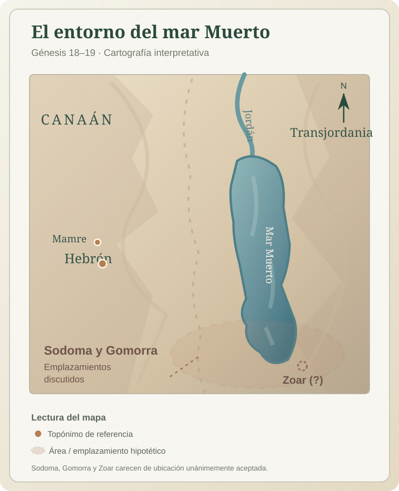
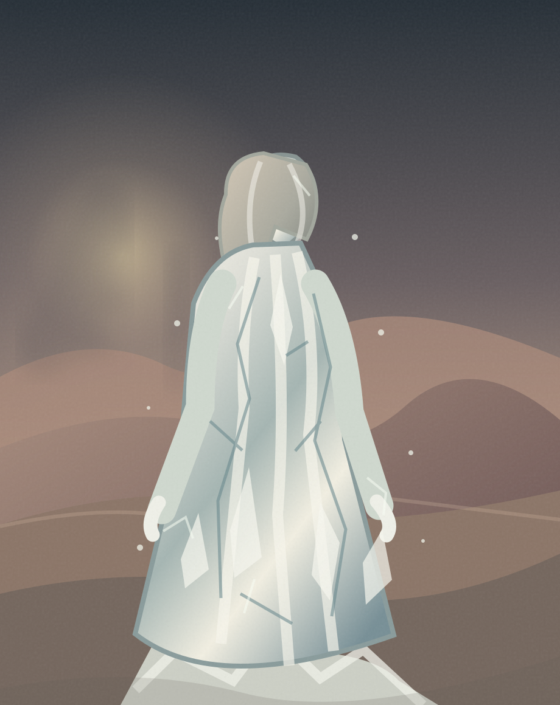

18:1 Después le apareció Jehová en el encinar de Mamre, estando él sentado a la puerta de su tienda en el calor del día.
18:2 Y alzó sus ojos y miró, y he aquí tres varones que estaban junto a él122; y cuando los vio, salió corriendo de la puerta de su tienda a recibirlos, y se postró en tierra,
18:3 y dijo: — Señor, si ahora he hallado gracia en tus ojos, te ruego que no pases de tu siervo.
18:4 Que se traiga ahora un poco de agua, y lavad vuestros pies; y recostaos debajo de un árbol,
18:5 y traeré un bocado de pan, y sustentad vuestro corazón, y después pasaréis; pues por eso habéis pasado cerca de vuestro siervo. Y ellos dijeron: Haz así como has dicho.
18:6 Entonces Abraham fue de prisa a la tienda a Sara, y le dijo: — Toma pronto tres medidas de flor de harina, y amasa y haz panes cocidos debajo del rescoldo.
18:7 Y corrió Abraham a las vacas, y tomó un becerro tierno y bueno, y lo dio al criado, y este se dio prisa a prepararlo.
18:8 Tomó también mantequilla y leche, y el becerro que había preparado, y lo puso delante de ellos; y él se estuvo con ellos debajo del árbol, y comieron.
18:9 Y le dijeron: ¿Dónde está Sara tu mujer? Y él respondió: — Aquí en la tienda.

18:10 Entonces dijo: De cierto volveré a ti; y según el tiempo de la vida, he aquí que Sara tu mujer tendrá un hijo. Y Sara escuchaba a la puerta de la tienda, que estaba detrás de él.
18:11 Y Abraham y Sara eran viejos, de edad avanzada; y a Sara le había cesado ya la costumbre de las mujeres.
18:12 Se rió, pues, Sara entre sí, diciendo: ¿Después que he envejecido tendré deleite, siendo también mi señor ya viejo?
18:13 Entonces Jehová dijo a Abraham: ¿Por qué se ha reído Sara diciendo: Será cierto que he de dar a luz siendo ya vieja?
18:14 ¿Hay para Dios alguna cosa difícil? Al tiempo señalado volveré a ti, y según el tiempo de la vida, Sara tendrá un hijo.
18:15 Entonces Sara negó, diciendo: — No me reí; porque tuvo miedo. Y él dijo: No es así, sino que te has reído.123
18:16 Y los varones se levantaron de allí, y miraron hacia Sodoma; y Abraham iba con ellos acompañándolos.
18:17 Y Jehová dijo: ¿Encubriré yo a Abraham lo que voy a hacer,
18:18 habiendo de ser Abraham una nación grande y fuerte, y habiendo de ser benditas en él todas las naciones de la tierra?
18:19 Porque yo sé que mandará a sus hijos y a su casa después de sí, que guarden el camino de Jehová, haciendo justicia y juicio, para que haga venir Jehová sobre Abraham lo que ha hablado acerca de él.
18:20 Entonces Jehová le dijo: Por cuanto el clamor contra Sodoma y Gomorra se aumenta más y más, y el pecado de ellos se ha agravado en extremo,
18:21 descenderé ahora, y veré si han consumado su obra según el clamor que ha venido hasta mí; y si no, lo sabré.
18:22 Y se apartaron de allí los varones, y fueron hacia Sodoma; pero Abraham estaba aún delante de Jehová.
18:23 Y se acercó Abraham y dijo: — ¿Destruirás también al justo con el impío?
18:24 Quizá haya cincuenta justos dentro de la ciudad: ¿destruirás también y no perdonarás al lugar por amor a los cincuenta justos que estén dentro de él?
18:25 Lejos de ti el hacer tal, que hagas morir al justo con el impío, y que sea el justo tratado como el impío; nunca tal hagas. El Juez de toda la tierra, ¿no ha de hacer lo que es justo?
18:26 Entonces respondió Jehová: Si hallare en Sodoma cincuenta justos dentro de la ciudad, perdonaré a todo este lugar por amor a ellos.
18:27 Y Abraham replicó y dijo: — He aquí ahora que he comenzado a hablar a mi Señor, aunque soy polvo y ceniza
18:28 Quizá faltarán de cincuenta justos cinco; ¿destruirás por aquellos cinco toda la ciudad? Y dijo: No la destruiré, si hallare allí cuarenta y cinco.
18:29 Y volvió a hablarle, y dijo: — Quizá se hallarán allí cuarenta. Y respondió: No lo haré por amor a los cuarenta.
18:30 Y dijo: — No se enoje ahora mi Señor, si hablare: quizá se hallarán allí treinta. Y respondió: No lo haré si hallare allí treinta.
18:31 Y dijo: — He aquí ahora que he emprendido el hablar a mi Señor: quizá se hallarán allí veinte. No la destruiré, respondió, por amor a los veinte.
18:32 Y volvió a decir: — No se enoje ahora mi Señor, si hablare solamente una vez: quizá se hallarán allí diez. No la destruiré, respondió, por amor a los diez.124
18:33 Y Jehová se fue, luego que acabó de hablar a Abraham; y Abraham volvió a su lugar.
19:1 Llegaron, pues, los dos ángeles a Sodoma a la caída de la tarde; y Lot estaba sentado a la puerta de Sodoma. Y viéndolos Lot, se levantó a recibirlos, y se inclinó hacia el suelo,
19:2 y dijo: — Ahora, mis señores, os ruego que vengáis a casa de vuestro siervo y os hospedéis, y lavaréis vuestros pies; y por la mañana os levantaréis, y seguiréis vuestro camino. Y ellos respondieron: — No, que en la calle nos quedaremos esta noche.
19:3 Mas él porfió con ellos mucho, y fueron con él, y entraron en su casa; y les hizo banquete, y coció panes sin levadura, y comieron.
19:4 Pero antes que se acostasen, rodearon la casa los hombres de la ciudad, los varones de Sodoma, todo el pueblo junto, desde el más joven hasta el más viejo.
19:5 Y llamaron a Lot, y le dijeron: — ¿Dónde están los varones que vinieron a ti esta noche? Sácalos, para que los conozcamos.125
19:6 Entonces Lot salió a ellos a la puerta, y cerró la puerta tras sí,
19:7 y dijo: — Os ruego, hermanos míos, que no hagáis tal maldad.
19:8 He aquí ahora yo tengo dos hijas que no han conocido varón; os las sacaré fuera, y haced de ellas como bien os pareciere126; solamente que a estos varones no hagáis nada, pues que vinieron a la sombra de mi tejado.
19:9 Y ellos respondieron: — Quita allá; y añadieron: — Vino este extraño para habitar entre nosotros, ¿y habrá de erigirse en juez? Ahora te haremos más mal que a ellos. Y hacían gran violencia al varón, a Lot, y se acercaron para romper la puerta.
19:10 Entonces los varones alargaron la mano, y metieron a Lot en casa con ellos, y cerraron la puerta.
19:11 Y a los hombres que estaban a la puerta de la casa hirieron con ceguera desde el menor hasta el mayor, de manera que se fatigaban buscando la puerta.
19:12 Y dijeron los varones a Lot: — ¿Tienes aquí alguno más? Yernos, y tus hijos y tus hijas, y todo lo que tienes en la ciudad, sácalo de este lugar;
19:13 porque vamos a destruir este lugar, por cuanto el clamor contra ellos ha subido de punto delante de Jehová; por tanto, Jehová nos ha enviado para destruirlo.
19:14 Entonces salió Lot y habló a sus yernos, los que habían de tomar sus hijas127, y les dijo: — Levantaos, salid de este lugar; porque Jehová va a destruir esta ciudad. Mas pareció a sus yernos como que se burlaba.
19:15 Y al rayar el alba, los ángeles daban prisa a Lot, diciendo: — Levántate, toma tu mujer, y tus dos hijas que se hallan aquí, para que no perezcas en el castigo de la ciudad.
19:16 Y deteniéndose él, los varones asieron de su mano, y de la mano de su mujer y de las manos de sus dos hijas, según la misericordia de Jehová para con él; y lo sacaron y lo pusieron fuera de la ciudad.
19:17 Y cuando los hubieron llevado fuera, dijeron: — Escapa por tu vida; no mires tras ti, ni pares en toda esta llanura; escapa al monte, no sea que perezcas.
19:18 Pero Lot les dijo: — No, yo os ruego, señores míos.
19:19 He aquí ahora ha hallado vuestro siervo gracia en vuestros ojos, y habéis engrandecido vuestra misericordia que habéis hecho conmigo dándome la vida; mas yo no podré escapar al monte, no sea que me alcance el mal, y muera.
19:20 He aquí ahora esta ciudad está cerca para huir allá, la cual es pequeña; dejadme escapar ahora allá (¿no es ella pequeña?), y salvaré mi vida.
19:21 Y le respondió: — He aquí he recibido también tu súplica sobre esto, y no destruiré la ciudad de que has hablado.128
19:22 Date prisa, escápate allá; porque nada podré hacer hasta que hayas llegado allí. Por eso fue llamado el nombre de la ciudad, Zoar.
19:23 El sol salía sobre la tierra, cuando Lot llegó a Zoar.

19:24 Entonces Jehová hizo llover sobre Sodoma y sobre Gomorra azufre y fuego de parte de Jehová desde los cielos;
19:25 y destruyó las ciudades, y toda aquella llanura, con todos los moradores de aquellas ciudades, y el fruto de la tierra.
19:26 Entonces la mujer de Lot miró atrás, a espaldas de él, y se volvió estatua de sal.
19:27 Y subió Abraham por la mañana al lugar donde había estado delante de Jehová.
19:28 Y miró hacia Sodoma y Gomorra, y hacia toda la tierra de aquella llanura miró; y he aquí que el humo subía de la tierra como el humo de un horno.
19:29 Así, cuando destruyó Dios las ciudades de la llanura, Dios se acordó de Abraham, y envió fuera a Lot de en medio de la destrucción, al asolar las ciudades donde Lot estaba.

19:30 Pero Lot subió de Zoar y moró en el monte, y sus dos hijas con él; porque tuvo miedo de quedarse en Zoar, y habitó en una cueva él y sus dos hijas.
19:31 Entonces la mayor dijo a la menor: — Nuestro padre es viejo, y no queda varón en la tierra que entre a nosotras conforme a la costumbre de toda la tierra.
19:32 Ven, demos a beber vino a nuestro padre, y durmamos con él, y conservaremos de nuestro padre descendencia.
19:33 Y dieron a beber vino a su padre aquella noche, y entró la mayor, y durmió con su padre; mas él no sintió cuándo se acostó ella, ni cuándo se levantó.
19:34 El día siguiente, dijo la mayor a la menor: — He aquí, yo dormí la noche pasada con mi padre; démosle a beber vino también esta noche, y entra y duerme con él, para que conservemos de nuestro padre descendencia.
19:35 Y dieron a beber vino a su padre también aquella noche, y se levantó la menor, y durmió con él; pero él no echó de ver cuándo se acostó ella, ni cuándo se levantó.
19:36 Y las dos hijas de Lot concibieron de su padre.
19:37 Y dio a luz la mayor un hijo, y llamó su nombre Moab, el cual es padre de los moabitas hasta hoy.
19:38 La menor también dio a luz un hijo, y llamó su nombre Ben-ammi, el cual es padre de los amonitas hasta hoy.129130
Notas del editor
- 122La narrativa parece indicar que el Señor mismo es uno de estos tres varones;hay hay varias interpretaciones sobre la identidad de los otros visitantes. La tradición cristiana lo interpreta con una representación de la Trinidad (Padre, Hijo y Espíritu Santo). En la tradición judía, son tres ángeles; quizás con el Ángel de Jehová hablando en representación del Padre. Otra interpretación común es que se trata de una manifestación de Dios acompañado de dos ángeles. ↩
- 123El niño profetizado aquí es Isaac que significa “risa”. ↩
- 124En la tradición cristiana, este pasaje ilustra el papel de Cristo como intercesor por la Humanidad frente al Padre. ↩
- 125El verbo hebreo yādaʿ, «conocer», puede emplearse como eufemismo de las relaciones sexuales. En este contexto, especialmente por la respuesta de Lot en 19:8, parece expresar una amenaza de agresión sexual colectiva contra los visitantes. El episodio también contrasta la hospitalidad de Abraham con la hostilidad de los habitantes de Sodoma hacia los extranjeros. Otros pasajes bíblicos, como Ezequiel 16:49–50, atribuyen a Sodoma pecados adicionales, entre ellos la soberbia y la indiferencia hacia los pobres. ↩
- 126Este ofrecimiento y las posteriores acciones de sus hijas parecen indicar que Lot y su familia también estaban empezando a contagiarse de la corrupción moral de la ciudad. Hay que notar que ni el narrador ni Dios validan estos actos. ↩
- 127Lo más probable, dado el comentario anterior de Lot de que sus hijas “no conocían varón”, es que estos yernos fueran más bien prometidos de sus hijas pero que no estuvieran casados todavía. ↩
- 128Aquí el ángel parece actuar de forma independiente; aunque hay cierto debate entre los teólogos. Algunos creen que en realidad habla en nombre de Jehová, otros creen que es, de hecho, una manifestación de éste, y otros creen que Dios ha delegado su autoridad sobre el ángel para ejecutar su juicio. ↩
- 129El nombre Moab se relaciona mediante un juego de palabras con la expresión hebrea «de padre», en referencia a su origen narrado en el pasaje. Ben-ammi significa «hijo de mi pueblo» o «hijo de mi pariente». Ambos nombres sirven para explicar literariamente el origen de los moabitas y amonitas, pueblos vecinos de Israel. ↩
- 130Como se ha mencionado anteriormente, estos actos podrían enmarcarse dentro de la corrupción moral de Sodoma que ha acabado contaminando la familia de Lot. Es significativo el patrón recurrente en el Génesis en el que a un gran acto de misericordia de Dios, le sigue un acto inmoral del ser humano (la embriaguez de Noé es el ejemplo más claro). ↩